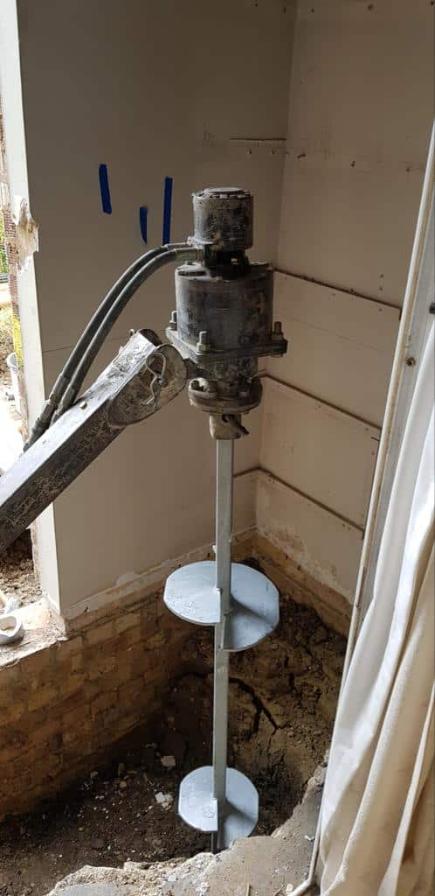
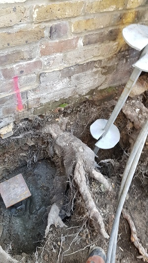

London Screw Piling
20 years experience installing screw piles


We specialise in high performance screw piling solutions across London and surrounding areas. With over 20 years of industry experience, we deliver structural reliability, fast installation and minimal ground disturbance for residential and commercial projects.
Our team works closely with architects, engineers and contractors to ensure every foundation system is installed to the highest structural and safety standards.
info@londonscrewpiling.co.uk
020 0000 0000
London, United Kingdom